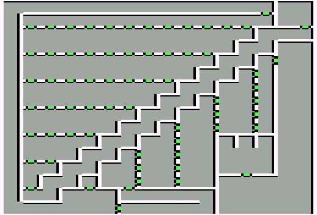

Good Sorcerer's castle
| X | Y | Event |
| 1 | 2 | This one's easy. |
| 3 | 4 | Rhymes with door. |
| 5 | 6 | This sick sheik's sixth sheep |
| 7 | 8 | Twice the first two's double |
| 9 | 10 | Sides of a pentagram |
| 10 | 11 | Almost a dozen |
| 4 | 2 | The alphabet is reversed |
| 5 | 3 | It's z end |
| 7 | 5 | You and You |
| 9 | 7 | No just you |
| 11 | 9 | The first on the Right |
| 11 | 5 | Left lock |
| 12 | 5 | Yekop |
| 13 | 5 | Right lock |